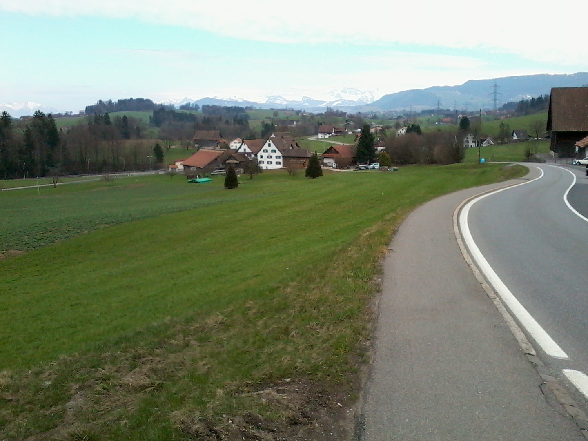

3. Hirzel hágó
47.213433, 8.598525

Eredeti leírás: Zugból kelet felé felkapaszkodtok a Hirzel hágóra, amely a Sihl völgyét és a Zürichi tó térségét köti össze. A vidék dombos, zöld, szelídebb alpesi táj, szétterülő tanyákkal és magányos parasztházakkal. A környék irodalmi szempontból is érdekes, mert Hirzel közelében született Johanna Spyri, a Heidi történetek szerzője, aki ezekből a tájakból merített inspirációt. A dombtetőkről visszanézve jól látni a Zugi tó és a Luzerni tó irányába is, tehát ez egyfajta „gerincvonal”, amely elválasztja a különböző tórendszereket. Geográfiailag ez a rész már átmenetet képez a központi svájci tórégió és a később elérendő keleti hegyvidék között. A hágó magassága mérsékelt, de jól érződik rajta, hogyan emelkedik ki a táj a nagy vízfelületek fölé.
Érdekességek:
A Hirzel hágó nem a magasságával hat, hanem azzal, hogy gerinc jellegű átvezetést ad két vízrendszer és két tájkarakter között. Ilyen szelíd átmeneti hágókon különösen jól érzékelhető, hogyan vált át a tóparti tér a dombos, legelős mezőgazdasági tájba.
A gerincekről visszanézve több tó iránya is érzékelhető, ezért a hágó egyfajta természetes panoráma tengelyként működik. Ez az a pont, ahol a táj már kevésbé vízfelület központú, és fokozatosan a hegyvidéki völgyek logikája kerül előtérbe.
A tanyás, szétszórt településszerkezet is jelzi az átmenetet, mert itt a domborzat és a legelők diktálják, hol érdemes építkezni.